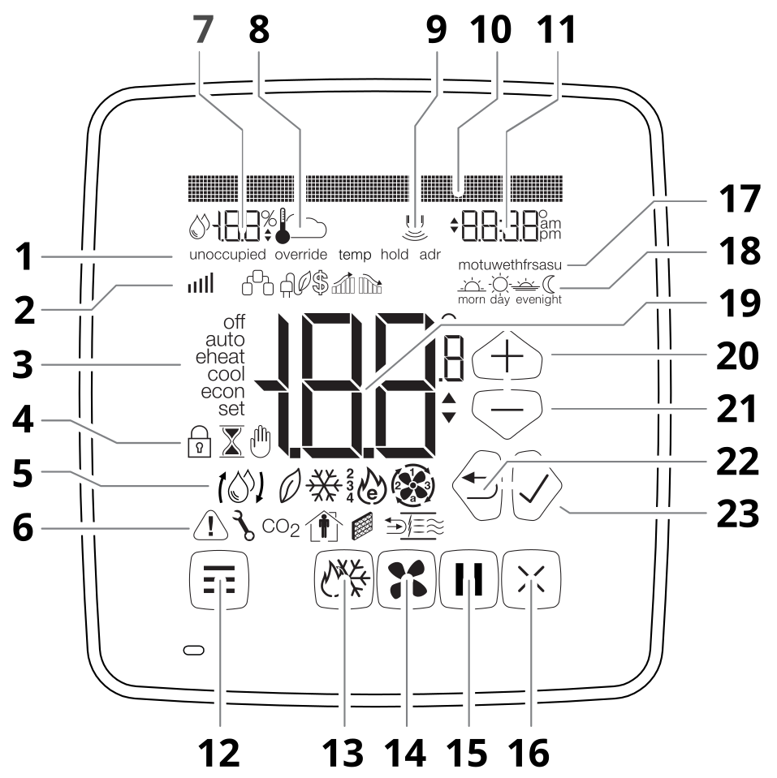
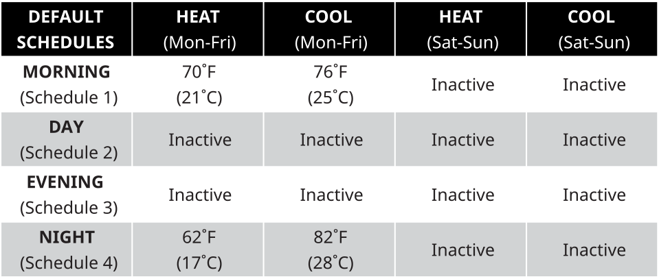
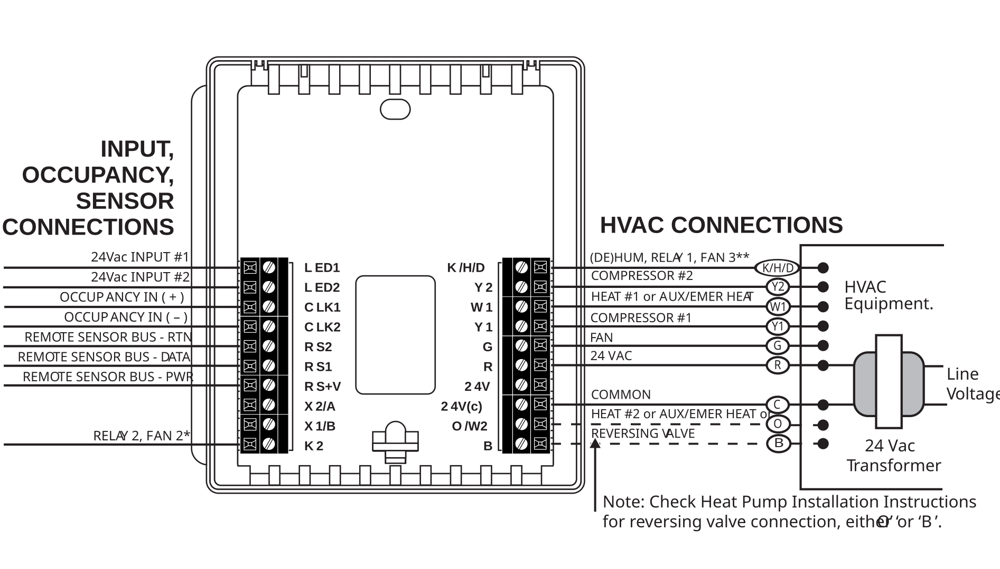
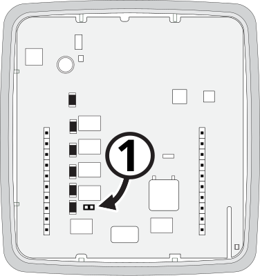
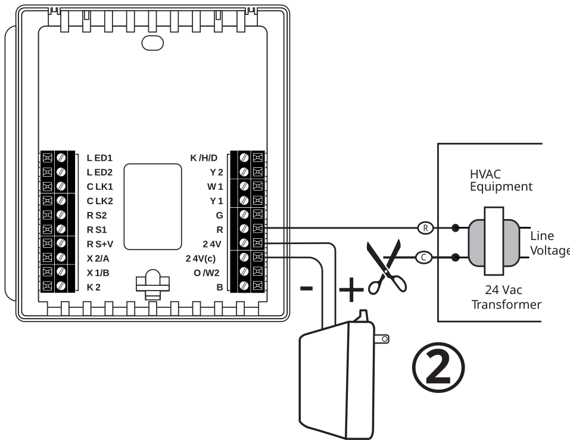
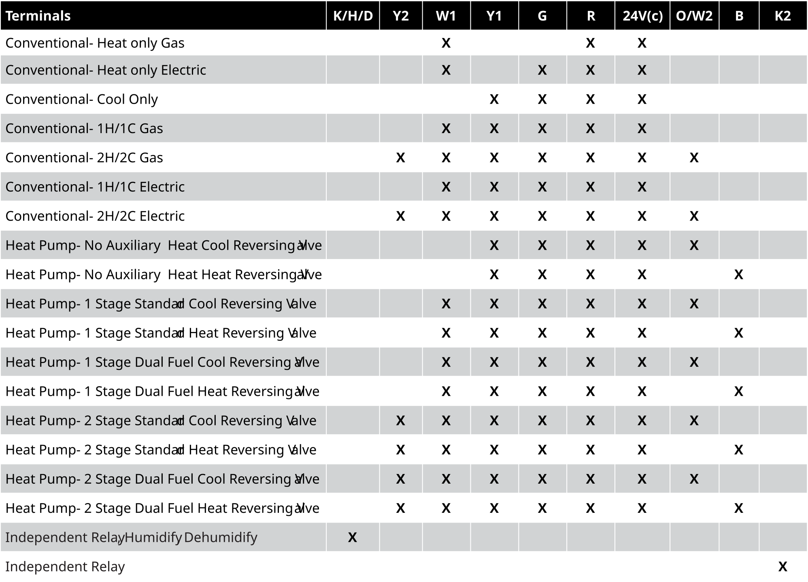

Before You Start
Please read the entire installation manual. The thermostat will need to be correctly wired and configured for proper operation. Basic HVAC configuration can be performed from the thermostat touchscreen and advanced settings are accessed via your network and the Internet.
Introduction
The X-Series thermostat is a network-connected color touchscreen thermostat with an advanced remote sensor bus, designed for new or replacement commercial or residential applications. It supports up to 3 Heat / 2 Cool heat pumps and 2 Heat / 2 Cool conventional systems. Internal webpages help deliver a near-effortless setup of your daily schedules (4 events per day), and up to 40 Special and 40 Calendar Events. The unique scheduling structure also supports the powerful features of adjustable temporary override times, temperature ranges, occupied and unoccupied events, keypad lockout, and many more features.
Available in both Wi-Fi and Ethernet models, the X-Series supports NetX CloudConnect™, DirectConnect™, and PCConnect™ Software Tools.
Core Features
- 4 independent schedules per day
- 40 Calendar Event Schedules
- 40 Special Event Schedules
- Integrated Humidity Sensor
- Integrated Weather with Current Conditions & 7-Day Forecasts
- Occupancy Sensor Input
- 14 Remote Sensors: up to 6 indoor, 1 humidity, 1 outdoor, and up to 3 auxiliary sensors for monitoring items such as supply air, return air, walk-in refrigerators, freezers, etc.
- 2 Digital Inputs for Fault Conditions, including Condensate and Equipment Faults
- Email & Text Message Alerting for 4 Recipients
- Alerts include Hi/Lo Temps for Indoor, Outdoor, Supply, Return, and Aux Temps, Inefficient Equipment Runs, Change Filter Notifications, and Two Digital Inputs: 19 Alerts in All
What Is In The Box
- (1) X-Series Thermostat Faceplate
- (1) Wiring Backplate
- (2) 3/16" Drywall anchors
- (2) Mounting Screws
- (1) Installation Manual
BACnet & Modbus Protocols
The X-Series thermostat includes both BACnet and Modbus protocols for use in different building automation scenarios.
Either BACnet or Modbus may be configured, but only one may be in operation.
Thermostat Callout

Fig. 1 — Thermostat Callout
- Special Status Notification
- Secondary Notification Icons
- Current Equipment Mode Indicators
- Lock, Override, and Hold Icons
- Current Operation Status Icons
- Secondary Status Icons
- Remote Sensor Value (humidity and temperature)
- Remote Sensor Icons (temperature, indoor, outdoor icons)
- Occupancy Detection Icon
- Dot Matrix Display
- Clock Display
- Menu Button
- Mode Button
- Fan Button
- Hold Button
- Resume/Cancel/Power Button
- Day of Week Icons
- Active Schedule Icons
- Current Temperature Display
- Up Button (Up Arrow)
- Down Button (Down Arrow)
- Back Button (Left Arrow)
- Accept Button (Right Arrow)
Thermostat Location
To ensure proper operation, the thermostat should be mounted on an inside wall in a frequently occupied area of the space. In addition, its position must be at least 18" (46 cm) from any outside wall, and approximately 5' (1.5 m) above the floor in a location with freely circulating air of an average temperature.
Be sure to avoid the following locations:
- Behind doors or in corners where freely circulating air is unavailable
- Where direct sunlight or radiant heat from appliances might affect control operation
- On an outside wall
- Adjacent to, or in line with, conditioned air discharge grilles, stairwells, or outside doors
- Where its operation may be affected by steam or water pipes or warm air stacks in an adjacent partition, or by any unheated/uncooled area behind the thermostat
- Where operation may be affected by lighting dimmers
- Where operation will be affected by the supply air of an adjacent unit
- Near electrical source interference such as arcing relay contacts
Mount Thermostat Backplate
- From the factory, the thermostat faceplate is not firmly connected to the backplate. While holding the thermostat firmly near the bottom, gently pull apart the backplate from the faceplate.
- Place the rectangular opening in the backplate over the equipment control wires protruding from the wall. Use the backplate as a template and mark the location of the two mounting holes.
NOTE: There are several versions of the X-Series thermostat. The wiring instructions for the equipment are identical.
- Use the supplied anchors and screws for mounting on drywall or plaster; drill two 3/16" (5mm) diameter holes at the marked locations; tap the nylon anchors flush to the wall surface and fasten the backplate using the supplied screws.
WARNING: Do not over-tighten the screws!
- Connect the wires from your system to the thermostat terminals as shown in the Wiring Diagrams section of this manual. Carefully dress the wires so that any excess is pushed back into the wall cavity or junction box. Ensure that the wires are flush with the plastic backplate. The access hole should be sealed or stuffed to prevent drafts from affecting the thermostat.
- Reattach the faceplate to the backplate by placing the top of the faceplate over the top lip of the backplate.
- Gently swing the thermostat down and press on the bottom center edge until it snaps in place. This is a tight connection but may require a little wiggle to align the pins on the faceplate with the screw terminals on the backplate before it snaps into place.
- Reconnect power to the HVAC equipment. You are now ready to configure your thermostat for operation.
Thermostat Setup
The Dot Matrix Display will provide feedback on the User Menu or Installer Menu configuration and selected options. The Up Button and Down Button are used to select parameters while the LEFT ARROW (Back Button) and RIGHT ARROW (Accept button) are used to accept settings and navigate through the menu. You can use the CANCEL BUTTON to leave the User or Installer Menu at any time.
Touchscreen Temperature Override
Temperature Override Range (During Lockout)
On the Basic Configuration page, this setting adjusts the temperature variance allowed from the scheduled setpoint when the faceplate is locked. The range is from ±2°F (1°C) to ±8°F (4°C). Default is ±3°F (1.5°C).
Temporary Override (Up to 24 Hours)
Change the temperature setting temporarily without affecting the schedules, both occupied and unoccupied. Use the Up and Down Buttons to adjust the temperature within the minimum and maximum range. This temperature will be maintained for the duration set by the Override Timer. To cancel, simply press the Cancel Button.
Temporary Override During Lockout (Up to 24 Hours)
Change the temperature setting temporarily without affecting the schedules, even though the keypad is locked. Use the Up and Down Buttons to adjust the temperature limited to the Temperature Override Range setting. This temperature will be maintained for the duration set by the Override Timer. To cancel, simply press the Cancel Button.
Additional Settings & Features
In addition to the User Menu and Installer Menu, the X-Series thermostat has additional options that can be set using the built-in web pages or via the cloud interface. Unless otherwise noted, these additional settings are available under the Configuration menu tab of the built-in web pages.
Override Timer
On the Basic Configuration page, you will be able to adjust the length of a temporary override condition from 0 minutes to 24 hours, in 10-minute increments. The default override time is 8 hours.
Temperature Calibration Offset
The thermostat is pre-calibrated at the factory, but in some installations, lack of airflow at the sensor or proximity to other warming or cooling sources may cause the temperature to be off by a few degrees. The X-Series thermostat includes a temperature calibration offset with a range of ±6°F (3°C) in 0.2°F (0.1°C) increments. The Temperature Calibration Offset is on the HVAC Settings web page of the thermostat.
Lock Screen
The X-Series thermostat can restrict and lock out certain functions available from the faceplate. The Lock Screen can be activated from the HVAC Settings web page on the thermostat. When engaged, you can set a 4-digit PIN code that can be used to temporarily unlock the faceplate for 30 minutes.
Temporarily Unlock Faceplate
When the X-Series thermostat is placed on the Locked Screen, you can temporarily bypass the Lock Screen by entering the 4-digit PIN. To temporarily unlock the faceplate, follow the steps below.
- Press the bottom left area of the touchscreen where the Menu Button is usually located. Temporary Unlock will display in the Dot Matrix Display.
- The Dot Matrix area will then display Enter PIN: 0 0 0 0. Use the Up and Down Buttons to select the first digit in the PIN code. Press the Accept Button (Right Arrow) to enter the first digit.
- Repeat Step 2 for the next three digits.
When you enter the correct PIN, the thermostat will return to the main screen and display a countdown timer Unlock: 30 min left in the Dot Matrix Display. To re-lock the screen, press the Cancel Button on the right.
LED1 / Filter Indicator
If selected by software, the Filter Icon will illuminate when a signal is received from the Terminal LED1 on the Terminal block. This indicates the filter needs to be changed. Otherwise, the status of Terminal LED1 will be reported on the Status Update page of the thermostat.
LED2 / Service Indicator
If selected by the software, the Service Indicator icon will illuminate when a signal is received from Terminal LED2 on the terminal block. This terminal is normally connected to the L terminal on a heat pump. When a signal is received, the WRENCH icon will display on the thermostat screen, indicating that service is required.
Auxiliary/Emergency Heat Indicator
The thermostat is equipped with the Emergency Heat icon in the Main Status Icons area on the faceplate, which indicates when the system has engaged auxiliary heat mode or emergency heat mode.
Random Restart
After a power failure, the thermostat will delay the heating/cooling equipment start-up by 1–24 seconds. When multiple X-Series thermostats are used, this minimizes the “in rush” current (electric power usage) as it reduces the number of HVAC units that will be turned on simultaneously.
Power Failures
The X-Series thermostat has an internal power backup that will last approximately two days. If the thermostat experiences a power outage less than this time, all functions will resume as soon as power is restored. If the power outage lasts longer, upon power restoration the thermostat will recover depending on the following factors:
- Time set via NTP (Network Time Protocol): When the power is restored and the thermostat connects to the internet, it will resume normal programmed operation.
- Time set manually: When power is restored, the clock will flash 12:00 and will operate in Manual Mode until the time is set. After the time has been set, the thermostat will resume normal programmed operation.
Occupancy Control
Occupancy control settings are available on the Sensor Settings web page and via the Installer Menu. These settings define how the thermostat responds to occupancy input on the CLK1/CLK2 terminals.
| Setting | Description |
|---|---|
| Occupancy Input | Set to Disabled to ignore occupancy input, or Terminal to enable sensing via the CLK1/CLK2 terminals. |
| Soft Setback | When On, raises the cool setpoint and lowers the heat setpoint by the Setpoint Offset when the space is unoccupied during a scheduled occupied period. Setpoints return to the scheduled values when occupancy is detected. |
| Occupied Recovery | Controls thermostat response when occupancy is detected during an unoccupied schedule. Soft Recovery: returns to last occupied setpoints adjusted by the Setpoint Offset. Full Recovery: fully returns to the last occupied setpoints. In both cases, the thermostat reverts to the unoccupied schedule when the sensor clears. |
| Setpoint Offset | Number of degrees by which Soft Setback and Soft Recovery adjust the setpoints. Only visible when Soft Setback is On or Occupied Recovery is set to Soft Recovery. |
| Verify Occupancy | Time the sensor must continuously detect an occupant before the thermostat begins an occupied state. |
| Minimum Occupied | Minimum duration of the occupied state once it is triggered. |
| Verified UnOccupancy | Time the sensor must report no occupancy before the thermostat returns to an unoccupied state. |
Remote Sensors (Optional)
If your thermostat has been installed with one or more remote sensors, the sensor information is available on the small secondary display of the thermostat. There are many different remote sensor options.
You can view the remote sensor information by tapping the upper left part of the display to view different attached remote sensors.
RS1 – RS2 – RS+V: Remote Sensor Bus
Used for connection of a wide variety of remote sensors, allowing installation flexibility and additional information from the communications bus. It also allows the thermostat to be placed in an area away from view.
Sensor Types
The following sensor types are supported and configured by name on the Sensor Settings web page of the thermostat. Click UPDATE to apply changes.
| Sensor | Description |
|---|---|
| INDOOR | Remote indoor temperature sensor (model NT-Room-S). Up to 6 sensors may be installed; the thermostat displays the average of all readings. Use the HVAC Settings web page to include or exclude the internal sensor from the averaged calculation. |
| OUTDOOR | Local outdoor temperature sensor. When the Enable Sensor checkbox is unchecked, the outdoor reading defaults to the current weather data. Check Enable Sensor to use the wired remote sensor. |
| HUMIDITY | Indoor humidity sensor. When the Enable Sensor checkbox is unchecked, the humidity reading defaults to weather data. Check Enable Sensor to use the wired remote sensor. |
| AUX 1 | Auxiliary temperature sensor for any air temperature measurement and alerting (requires appropriate probe). |
| AUX 2 | Auxiliary temperature sensor for any air temperature measurement and alerting (requires appropriate probe). |
| AUX 3 | Auxiliary sensor configurable for air temperature or water temperature measurement and alerting. |
| WATER | Water leak sensor. Enable the Turn System Off option to automatically shut down the HVAC system when a water leak is detected. |
Remote Sensor Averaging
If remote temperature sensors are connected, the thermostat can either use the remote sensors (default) or average the remote sensor and the internal temperature sensor. The Remote Sensor Averaging setting can be accessed from the HVAC Settings web page of the thermostat.
On-Board Data Logging with Sub-Metering Support
The NetX Platform provides reliable deep-data analysis for runtimes and all thermostat operations. This data can be used to perform sub-metering analysis to bill tenants according to actual HVAC usage for heating and cooling. Onboard memory supports approximately 30 days of records.
Programming The Thermostat
This thermostat product has factory default programs as indicated below. Based on energy-saving guidelines and recommendations for residential use, these settings can reduce heating/cooling expenses by as much as 33%.

Fig. 2 — Default Programming Schedule
This thermostat is intended to be used as a Communicating Programmable Thermostat, with changes to the thermostat schedules accomplished over a computer interface via:
- CloudConnect™ Internet-Based Cloud Service
- PCConnect™ Local Network & Port Forwarded Access
- DirectConnect™ Integrated Web Server for Connectivity from Any Modern Web Browser
- Integrated NetX™ API, Supports 3rd Party Apps
- BACnet Integration Option
Wiring Diagrams
The basic wiring for the X-Series thermostats is identical for both the WBM-WiFi (wireless) or WBM-IP (ethernet) Communication Backplate versions of the thermostat.

Fig. 3 — Basic Wiring Diagram — WBM-WiFi / WBM-IP (identical)
Terminal Connection Reference
| Terminal | Function |
|---|---|
| K/H/D | Humidification or Dehumidification, AUX Relay 1, or Fan 3 |
| Y2 | Energizes compressor for second-stage cooling, or for heat pumps, either second-stage heating or cooling |
| W1 | Energizes heater for first-stage heating, or for heat pumps, auxiliary/emergency heat |
| Y1 | Energizes compressor for first-stage cooling, or for heat pumps, either first-stage heating or cooling |
| G | Energizes fan circuit with a call for heating or cooling |
| R | Independent Switching Voltage from HVAC equip |
| 24V | 24 Vac |
| 24V(c) | 24 Vac Common |
| O/W2 | Energizes heater for second-stage heating, or for heat pumps, energizes the reversing valve in cooling mode |
| B | Energizes the reversing valve in heating mode |
| LED1 | 24 Vac Input #1 for Filter or other Alert |
| LED2 | 24 Vac Input #2 for Condensate, Fault, or other Alert |
| CLK1 | For use with External Occupancy Sensor ( + ) |
| CLK2 | For use with External Occupancy Sensor ( − ) |
| RS2 | Remote Sensor Bus (Power Return) |
| RS1 | Remote Sensor Bus (Data) |
| RS+V | Remote Sensor Bus (Power) |
| K2 | Independent Relay AUX Relay 2 or Fan 2 |
Independent Power Source (Optional)
In situations where power from the HVAC hardware does not meet the needs of the X-Series thermostat, you can power the thermostat independently of the HVAC unit. A 24 VAC Transformer has the capability to power six X-Series thermostats. Follow the steps below to install a separate power source.

Fig. 4 — Remove Jumper for Independent Power
- Remove the jumper on the faceplate.
- Place the separate transformer 24 VAC wire in the 24 VAC terminal.
- Move the WiFi or Ethernet board RED wire from R to the 24 VAC terminal.
- Leave the WiFi or Ethernet board BLACK wire in the 24V(c) terminal. If connected, remove the thermostat wire from the 24 VAC(c) terminal.
- Place the equipment red wire in R.
- Place the separate transformer 24 VAC (Common) wire in the 24V(c) terminal.
- The common from the equipment does not connect to the thermostat. This can cause a ground loop and issues.

Fig. 5 — Independent Power Source Wiring
Wiring Diagram Cross Reference Chart
The chart below lists the connections needed for most common applications. Refer to the Basic Wiring Diagram for where to connect appropriate wires.

Fig. 6 — Wiring Cross Reference Chart
Five (5) Year Limited Warranty
Network Thermostat™ warrants to the original purchaser that this product will be free from defects in workmanship and materials for a period of five years from the date of purchase with proof of purchase.
Warranty Limitations
This warranty begins on the date of purchase.
Warranty is Void if:
- The date code or serial number is defaced or removed.
- The product has a defect or damage due to product alteration, connection to an improper electrical supply, shipping and handling, accident, fire, flood, lightning, or other conditions beyond the control of the manufacturer.
- The product is not installed according to the manufacturer's instructions and specifications.
Owner's Responsibility:
- Provide proof of purchase.
- Provide normal care and maintenance.
- Pay for freight, labor, and travel.
- Return any defective product.
- In no event shall the manufacturer be liable for incidental or consequential damages.
This warranty gives you specific legal rights and you may have others that vary by state and/or province. The manufacturer's continuing commitment to quality products may require a change in specifications without notice.
CA Title 24 Requirements
This thermostat meets the Joint Appendix 5 (JA5) requirements for Occupant Controlled Smart Thermostat (OCST) certification of the California Energy Commission (CEC).
FCC Regulatory Information
This equipment has been tested and found to comply with the limits for a Class B digital device, pursuant to part 15 of the FCC Rules. These limits are designed to provide reasonable protection against harmful interference in a residential installation. This equipment generates, uses, and can radiate radio frequency energy, and if not installed and used in accordance with the instructions, may cause harmful interference to radio communications. However, there is no guarantee that interference will not occur in a particular installation. If this equipment does cause harmful interference to radio or television reception, which can be determined by turning the equipment off and on, the user is encouraged to try to correct the interference by one or more of the following measures:
- Reorient or relocate the receiving antenna
- Increase the separation between the equipment and receiver
- Connect the equipment to an outlet on a circuit different from that to which the receiver is connected
- Consult the dealer or an experienced radio/TV technician for help
Copyright Notice
This manual and its content are provided by mwConnect in partnership with Network Thermostat. Source content © Network Thermostat 2022. All rights reserved.
BACnet™ is a trademark of ASHRAE.
Modbus™ is a registered trademark of Schneider Automation Inc.
TruBlu™ and mwConnect are trademarks of mwConnect.